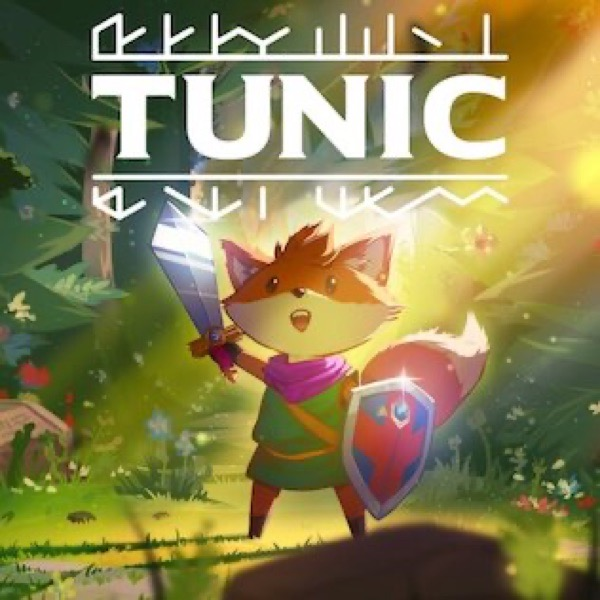

Adventure · 2022
Tunic
A fox, a manual you assemble page by page, and secrets under everything.

Cover: Wikipedia: Tunic (video game)
Facts
- Released
- 2022-03-16
- Genre
- Adventure
- Category
- Adventure
- Platforms
- Nintendo, PC, PlayStation, Xbox
- Developers
- Isometricorp Games
- Publishers
- Finji
PC requirements
- Minimum
- [object Object]
- Recommended
- [object Object]